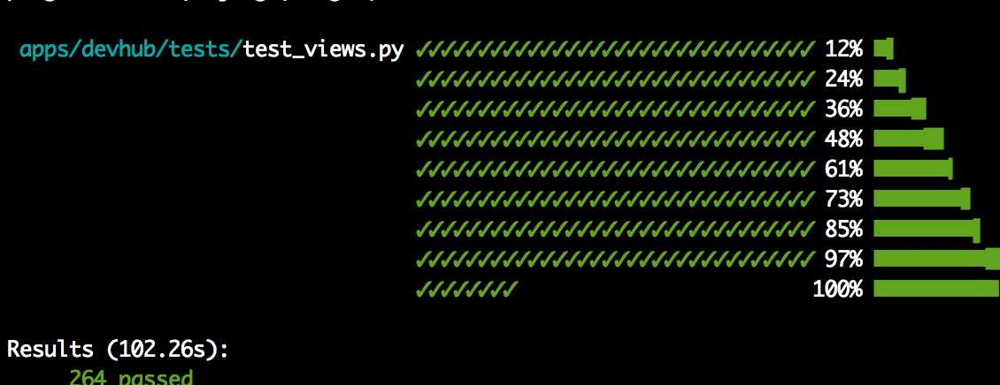
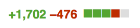
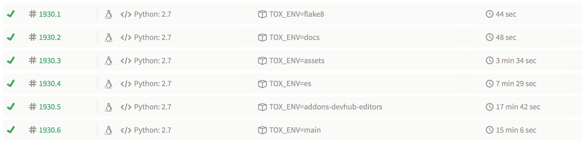

Naming is hard
vs
 + test
+ test
By Holger Krekel, who also wrote (some parts of) Tox, pypy, devpi
Equivalent to unittest and nose, highly customizable, with an excellent API.
Still actively maintained, and well documented.
Installation: pip install pytest
--duration=10-x (ou --maxfail=n)--pdb--pastebin=failed--showlocals --tb=long@pytest.mark.functionalpy.test -k test_foo
by path: py.test tests/bar/
by module: py.test test_baz.py
by mark: py.test -m functional ou
py.test -m "not functional"
def test_eq_dict(self):
> assert {'a': 0, 'b': 1, 'c': 0} == {'a': 0, 'b': 2, 'd': 0}
E assert {'a': 0, 'b': 1, 'c': 0} == {'a': 0, 'b': 2, 'd': 0}
E Omitting 1 identical items, use -v to show
E Differing items:
E {'b': 1} != {'b': 2}
E Left contains more items:
E {'c': 0}
E Right contains more items:
E {'d': 0}
E Use -v to get the full diff
There's more examples on this page. Many many more examples.
Depencendy injection
using fixtures, instead of (setUp|tearDown)(function|class|module|package)
def test_view(rf, settings):
settings.LANGUAGE_CODE = 'fr'
request = rf.get('/')
response = home_view(request)
assert response.status_code == 302
hocus pocus
Write the test once, run it with multiple inputs
@pytest.mark.parametrize(("input", "expected"),
[("3+5", 8), ("2+4", 6)])
def test_eval(input, expected):
assert eval(input) == expected
From now on, I'm only writing one test. The one.
Globally, in the pytest.ini file: mainly to (optionnally) declare marks and default parameters
[pytest]
addopts = --reuse-db --tb=native
python_files=test*.py
markers =
es_tests: mark a test as an elasticsearch test.
--reuse-db is the real deal
Locally, for the current folder and children: declare fixtures, plugins, hooks
import pytest, os
def pytest_configure():
# Shortcut to using DJANGO_SETTINGS_MODULE=... py.test
os.environ['DJANGO_SETTINGS_MODULE'] = 'settings_test'
# There's a lot of python path hackery done in our manage.py
import manage # noqa
Ugly. But easy.
There's many included plugins, but also community plugins:
--create-db, fixtures (rf, client, admin_client...)--cov myproj tests/--lf-n NUM I confess. I have a sweet tooth.
--reuse-db--create-db
[pytest]
addopts = --reuse-db
Good for my mental health
@pytest.mark.django_db
def test_with_db(self): # function/method
@pytest.mark.django_db
class TestFoo(TestCase): # class
pytestmark = pytest.mark.django_db # module
Anyway, who needs a DB nowadays, right?
in the conftest.py file
def pytest_collection_modifyitems(items):
for item in items:
item.keywords['django_db'] = pytest.mark.django_db
It's a pity, but it's your call. But it's a pity.
Use simple asserts
No camelCase, eg self.assertEqual
assert 1 == 2 vs self.assertEqual(1, 2)assert True vs self.assertTrue(True)assert not None vs self.assertIsNotNone(None)self.assertAbstractSingletonProxyFactoryBean. Just joking. Or am I?
Why not take advantage of something that
vs
+ test
No dependency injection (and not parametrization) for nose classes
But we can still use the autouse fixtures (fixtures on steroids)
No (data) fixture bundling ( django-nose feature), so slower test runs, but Django 1.8 test case data setup and possibility to run Travis builds in parallel
No big deal.find . -name test* | wc -l
ag "class Test" | wc -l
ag "def test_" | wc -l
ag "self.assert|ok_|eq_" | wc -l
py.test runs your current tests.
the proof 
Out of those,  is for a new
data fixture (code cleanup), unrelated to the switch.
is for a new
data fixture (code cleanup), unrelated to the switch.
py.test
versus
REUSE_DB=1 python manage.py test --noinput --logging-clear-handlers --with-id
Added @pytest.mark.django_db on our base TestCase
Added pytestmark = pytest.mark.django_db in 35 files that
needed it
def pytest_collection_modifyitems(items):
for item in items:
item.keywords['django_db'] = pytest.mark.django_db
I'm still hoping I'll be able to use this feature one day.
Missing calls to super() in the
(setUp|tearDown)(class), leading to code/data leaks in the
following tests.
Ugly PYTHONPATH hacks in the manage.py file.
import manage.py
@pytest.fixture(autouse=True, scope='session')
def _load_testapp():
installed_apps = getattr(settings, 'INSTALLED_APPS')
setattr(settings, 'INSTALLED_APPS', installed_apps + extra_apps)
django.db.models.loading.cache.loaded = False
I puked in my mouth.
tox
randomizes the PYTHONHASHSEED by default on each run.
And suddenly you realize your tests were expecting the dicts to be
ordered! Need to fix tests:
With py.test, tox and travis, it's a piece of cake

From more than 50 minutes down to less than 20
I know 20 minutes is slow. But it's LESS slow.pip install pytest && py.test
learn py.test: http://www.merlinux.eu/~hpk/testing.pdf
slides: http://mathieu.agopian.info/presentations/2015_06_djangocon_europe/
No more excuses!